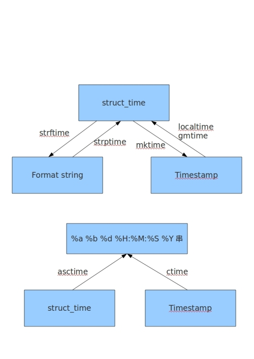

本文主要介绍模块列表如下：
(?P<name>正则表达式)，这里的命名就是name，通过groupdict("name")函数获取捕获值time中各种类型时间的转换，引用：https://blog.51cto.com/egon09/1840425

日期的函数还有calendar（日历）模块，详细见：https://docs.python.org/3/library/calendar.html
高级的文件，文件夹处理
直接运行推荐使用run方法，如果使用更高级的可以直接使用Popen接口；如果想得到程序运行结果，推荐使用getstatusoutput(cmd)
subprocess.run(args, *, stdin=None, input=None, stdout=None, stderr=None, capture_output=False, shell=False, cwd=None, timeout=None, check=False, encoding=None, errors=None, text=None, env=None, universal_newlines=None)剩余部分请参考：python内置模块介绍（二）